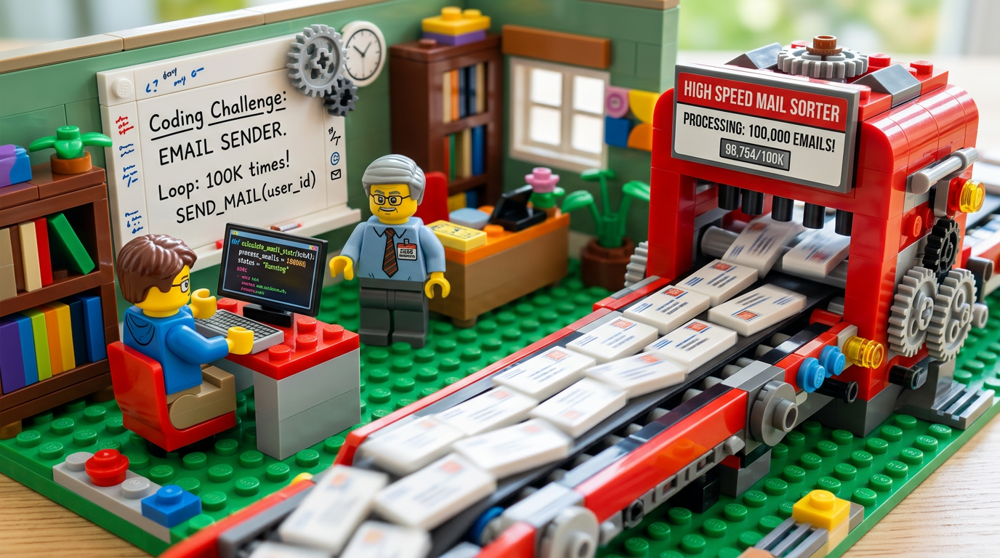
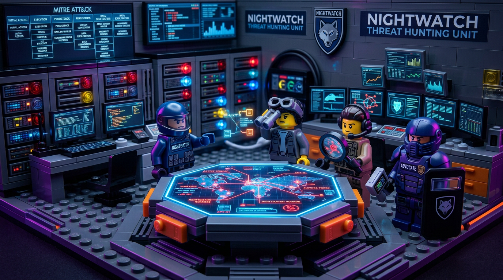
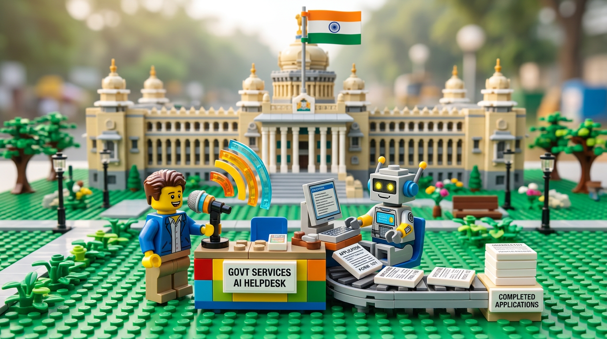
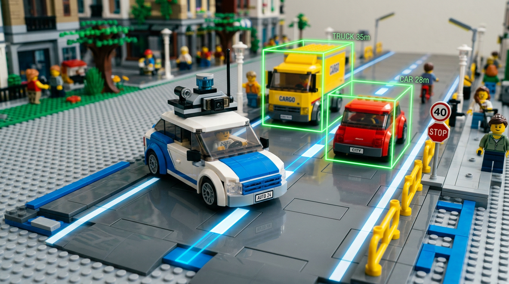
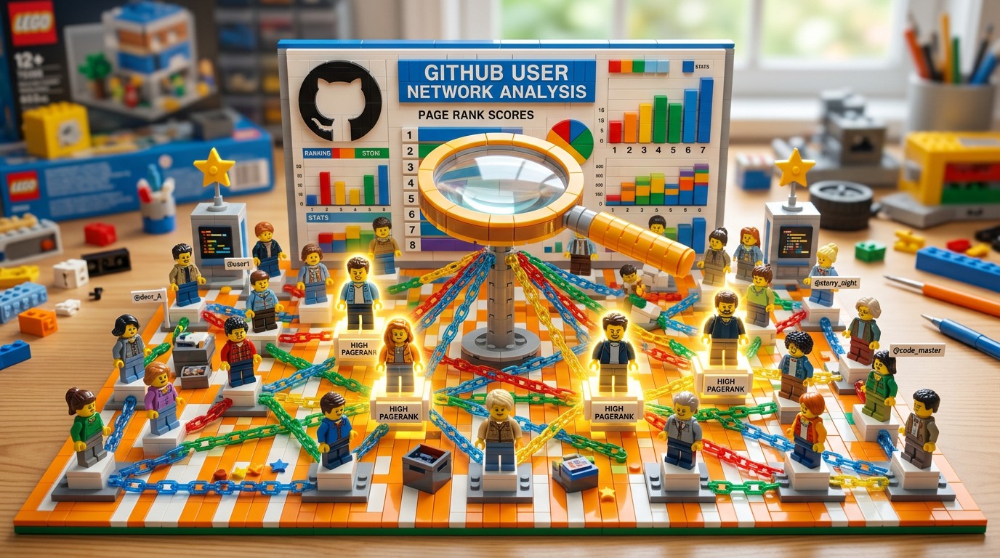

- Maintained data scraping infrastructure processing 20M+ listings across OTA APIs with resilient anti-bot and rate-limit bypass strategies.
- Scaled anti-bot detection with automated TLS fingerprint updates and proxy IP rotation pipelines.
- Implemented city-level ranking for 20K+ cities across guest profiles and booking windows.
- Built testing & observability with MiniTest and Prometheus for proactive issue detection.
Backend · AI · Data
Chirayu Vithalani
I build backend systems and AI agents that turn messy data and complex workflows into fast, reliable products — from 20M+ listing scrapers to multi-agent threat hunters.
Experience

- Built GraphQL APIs powering a website builder, cutting initial page load from 4s to 1s.
- Implemented a code execution platform for DSA questions with sandboxed execution and sub-10s feedback.
- Orchestrated auto-scaling Sidekiq workers, reducing marketing email delivery time by 75% for 100K emails.
- Optimized bulky REST APIs with write-through, lazy loading and TTL caching using Redis.
Featured Projects
Selected work combining backend engineering, AI systems, and data-heavy architectures.

InfinityVeil / NIGHTWATCH
Adversarial multi-agent threat hunting on Elasticsearch.
- Orchestrated 4 adversarial agents (SCANNER, TRACER, ADVOCATE, COMMANDER) over Elasticsearch logs to hunt and debate threats.
- Built confidence-based routing and attack timelines mapped to MITRE ATT&CK.
- Delivered real-time dashboards, chat, and review queues via ActionCable.
GlideGov Assistant
Voice-first assistant for discovering and applying to government schemes.
- Built an assistant that shortens discovery and application time for government schemes using Gemini voice & vision.
- Automated full form filling with Playwright browser agents, streamed via WebSockets.
- Restricted discovery to official domains using Google Search APIs for trustworthy results.

Other Projects

Driver Assistance System
Computer vision pipeline using HOG features and SVMs for car detection with 90% precision, plus lane detection and alerts.
View on GitHub →
GitHub Social Network Analysis
Built user-user and user-repo graphs with PageRank, HITS, and TF-IDF + KNN to recommend similar developers and repositories.
View on GitHub →Heart Failure Prediction
Web app that predicts heart failure risk with XGBoost, deployed using Flask and Docker on Azure.
View on GitHub →About
Backend engineer and AI builder focused on high-volume data pipelines, multi-agent systems, and real-time user experiences.
I work across the stack with a bias toward backend-heavy, data and AI focussed products — scaling scrapers that track 20M+ listings, orchestrating LLM agents for security teams, and shipping voice-first assistants that automate end-to-end workflows.
0
Listings processed
0
Emails in 30 min
0
LLM agents orchestrated
0
Delivery time reduction
Skills
Languages
- Ruby
- Python
- C++
- TypeScript / JavaScript
Frameworks & APIs
- Ruby on Rails
- React
- GraphQL
- Gemini API
AI & Data
- Elasticsearch Agent Builder
- scikit-learn · XGBoost
- OpenCV
- Data pipelines & observability
Infrastructure
- Docker
- AWS
- Sidekiq · RabbitMQ
- Jenkins · Prometheus
Databases
- MySQL
- DynamoDB
- Redis
- StarRocks